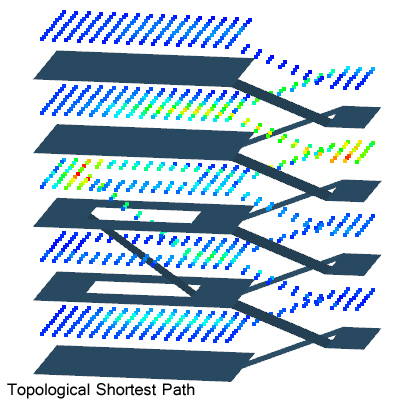

该算法是基于点阵的。用点阵去代表空间。点被定义为两类，一类是Reach-able Space,另一类是Boundary Representation。
分为两类点的意思，是定义视线用的。REAS（即reachable space缩写）点，可以发射视线，也可接收视线。BREP（即Boundary Representation缩写）点，不能发射视线，只能接收视线。
假设研究的目标是一个公园，那么人行道上面布的点，应该定义它为REAS点，而湖面上的点，应该定义它为BREP点。
View In算法反馈的值，被称为vid值，也就是view in degree。这个vid值越高，表示被看到的次数越多。
View Out算法反馈的值，被称为vod值，也就是view out degree。这个vod值越高，表示向外观察看到的其他点越多。
根据算法的定义，REAS点的头上，既有vid值，也有vod值。而BREP点，只提供vid值,在vod那里面查看,BREP点的vod值都是-1。
在REAS点的范围内，求解最短拓扑路径。
该算法有sp 和 ksp之分。sp就是最短路径，ksp就是前k个最短路径。
建筑学当中，人对于路径的选择并不绝对，单纯的sp没啥意思，而稍微比最短路径绕远一点点，又有趣味的路径，可能更加吸引人。
前k个最短路径，这个k值，最大允许用户自定义到20。
假设用户设定 k=7，DepthSpace将会返回一个“TSP7”的计算结果。
在DepthSpace当中，我们在真实三维模型的基础上，增加了单行道的定义。这是其他软件从未提供过的功能。
在单行道的基础上，我们可以变通一下，将这个算法用于研究地铁站一类的案例。国内许多地铁站的设计，从街道层下去的时候，无自动扶梯。从轨道层上来的时候，有自动扶梯。虽然共用空间，但方向不同，路径的权重值不同。可以用类似单行道的算法，把这个权重值赋予进去。在精确控制路径权重值的基础上，再来比较哪条路径是shortest path，这个显然更加贴合建筑学的要求。
每个点的头上，记着的这个TSP的值，都是这个点出现在最短拓扑路径上的次数。
点击下图查看 TSP 示例

Metric SP 的算法，与Topological SP的算法一样，也是只有 REAS点参与计算。
该算法也有sp 和 ksp之分。最大允许用户自定义到 k=20。
假设用户设定 k=13, DepthSpace将会返回一个“MSP13”的计算结果。
Metric SP也支持真实的单行道定义。也可以将单行道的算法变通一下，用于为路径的返回值赋予权重。例如，机场当中为了方便旅客找到登机口，往往提供水平方向的自动扶梯。乘坐该扶梯的情况下，旅客在水平方向实际运动了50米，但并不消耗体力。可以通过设定权重，这50米的数值不参与加总。
也可以设定这段扶梯等效于旅客步行10米。这也是可以设定的。
由于我们一开始建模的时候就是真实三维空间，那么也可以把高差考虑进来。假设有个上下楼的楼梯，实际走动的距离是10米，通过设定权重，可以使得软件认为，下楼时候走动的米制距离是3米，上楼时候走动的距离是20米。假设这个楼梯旁边有个电梯，这个电梯认为沿着高度方向运动，那么坐电梯不论走几层，都是走动了0米，这样的话，上下楼的时候，Metric SP当然更可能通过电梯。
通过DepthSpace提供的考虑单行道和高差的算法，在最短米制距离开始计算之前，这个场景的设定，可以高度贴合建筑学的实际情况，将来给出的计算结果将会很有说服力。
点击下图查看 MSP 示例
在建筑学的研究当中，直观地就能看到，有些空间与其他空间不一样。这些重要的空间可以被称为 Interesting Range，也就是趣味中心。Interesting Range在一个单独的建筑物中，数量肯定是非常有限的。
用户可以手工指定，某些REAS点为 Interesting Range点。或者，以vod的值为依据，选取系统当中排名前百分之多少的点进入IR的范围。有了IR定义之后，就是强制所有路径必须途经IR点。所有路径都必须绕经趣味中心。这样的路径本身就具有建筑学上的意义。如果一个点，本身不是Interesting Range点，而它经常出现在 TSP through Interesting Range的半路上，那么这个点本身也就有意思了。这个点代表的空间，在系统当中将会具有某种重要性。
有了TSP through Interesting Range的概念之后，我们还提供 MSP through Interesting Range的算法，意思也是强行绕行IR点，再求最短米制路径。
点击下图查看 TSPtIR 示例
参与该算法的都是REAS点。
以一个点为中心，创建一个球体。以这个球体的表面，为假想的人的视野范围。所有的建筑物，只要没有被遮挡，都能够在该球体上有个投影。这个投影具体是多大的面积，这个数值可以与球面的总面积进行个比较。这个百分比的值，有意义。
可视面积占球面面积的比值越大，表示这个物体在人的视野当中越醒目。
我们还可以为建筑物赋予权重，假设一般的墙面权重为1，而户外播放广告的那种巨大的LED广告屏，权重为2，这样就可以把建筑物的具体情况考虑进来。
甚至，我们可以为物体表面进行贴图，贴个灰度图，这样赋予权重值的时候，按照灰度值变化。
将VA%算法与View Out算法做比较，还是View Out的隐患比较大，因为，手工布置的点，点多了vod值就高，点少了vod值就低，容易人为地造成偏差。VA%是依据原始建筑物模型来的，顶多是球体的设置与人眼实际看到的视野，不太搭配，造成一些偏差。球体的半径到底取多大，经过一定的经验积累，我们将会找到范围，作为软件的默认值，推荐给用户。当下，VA%的球体半径，还是允许用户自定义的状态。
点击下图查看 VA% 示例
这个算法，是基于REAS点，考察可视体积。
可视体积的算法，在建筑学上具有独特的价值。典型的如建筑物的中庭，这类空间，显然是可视体积更有价值。
可视体积，可以理解为带有空间深度信息的可视面积。
从一个点向外看去，可视体积越大，表示这个建筑空间越宏伟。这是把数值记在点的头上。这是Visual Volumn out degree的计算结果。
如果以一个墙体为衡量标准，它出现在不同的REAS点的视野当中，如果历次被看到的情形中，Visual Volumn的值都反馈回来，记在墙体的头上，这就是Visual Volumn in degree。
VVod和VVid，将会提供前所未见的洞察力。
点击下图查看 VVod 示例
点击下图查看 VVid 示例
除了上述基础算法之外，我们还提供一些DepthMap时期就存在的算法，当然算法是经过详细研究之后，彻底重写的。如Visual Connectivity, Visual Step Depth, Mean Topological Depth(for REAS), Mean Visual Topological Depth(for REAS and BREP),Mean Metric Depth, Mean Visual Metric Depth, Visual Integration[HH]，Visual Control, Visual Controlability, Visual Entropy, Visual Clustering Coefficient(for REAS or for Surface),等算法。
除此之外，我们还开发了简易的GIS系统，直接能够把调研信息登记到建筑模型里面去。如果建模人员使用的是Rhino 的话，那么建模和调查信息录入可以同时进行。我们的GIS系统是基于公有云上跑的数据库的，允许多人同时操作同一个建筑模型，理论上无论多少人同时工作都可以满足。这样的服务能力，是之前任何GIS系统所不具备的。